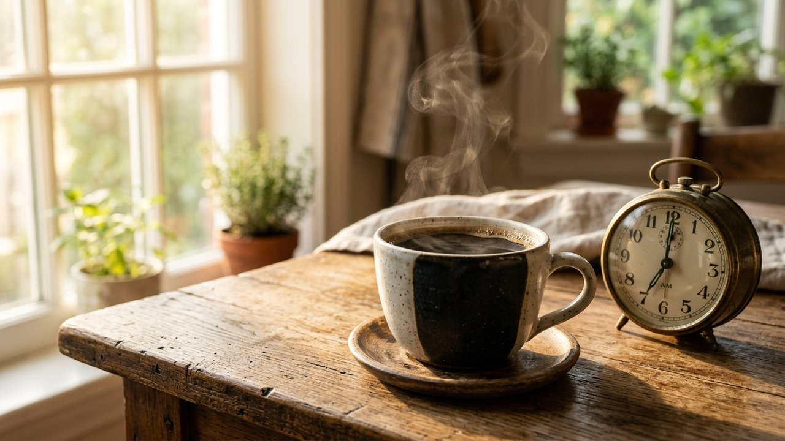

아침 알람 소리에 잠에서 깨어나자마자 주방으로 향해 커피를 내리거나, 출근길에 차가운 아메리카노를 챙기는 분들이 무척 많습니다.
몽롱한 정신을 번쩍 깨우기 위한 선택이지만, 속이 텅 빈 상태에서 곧바로 마시는 첫 잔은 신체 대사 체계에 상당한 자극으로 다가옵니다.
오전 일과를 시작하기도 전에 속이 쓰리거나 점심 무렵 급격히 무기력해지는 현상은 단순한 기력 저하 때문만이 아닙니다.
자연스러운 인체 각성 물질의 분비 곡선과 외부 각성 성분이 엇박자를 이루면서 나타나는 대표적인 신체 반응입니다.
수면에서 깨어난 직후 인체는 스스로 체온을 올리고 혈류 속도를 조절하며 활동 상태로 전환하는 준비 시간을 거칩니다.
이러한 자율 신경계의 자연스러운 조율 과정을 건너뛰고 강력한 중추 신경 활성 물질이 유입되면, 심장 박동수가 가파르게 상승하고 긴장 상태가 고조됩니다.
갑작스러운 체내 각성은 당장 눈을 번쩍 뜨이게 만들 수는 있으나, 지속적인 안정감을 주기보다 신체에 불필요한 과부하를 안겨줍니다.
온전히 잠에서 깨어나기도 전에 강한 자극을 반복해서 공급하는 습관은 시간이 흐를수록 오히려 아침 기상을 더욱 힘겹게 만듭니다.

사람의 몸은 외부 도움 없이도 아침을 시작할 수 있도록 콩팥 위 부신에서 코르티솔이라는 각성 조절 물질을 분비합니다.
학계에서는 이를 각성 반응 현상으로 정의하며, 잠에서 깬 뒤 30분에서 45분 사이에 하루 중 분비의 정점에 도달합니다.
자체적인 각성 물질이 정점을 이루는 시간에 외부 카페인이 더해지면, 체내 분비 시스템은 불필요한 과잉 자극으로 인지합니다.
장기적으로는 몸 자체의 호르몬 조절력이 약화되어 카페인 의존도가 심화되고, 정오 무렵 피로가 한꺼번에 몰려오는 악순환이 이어집니다.
| 시간대 | 코르티솔 혈중 농도 | 카페인 흡수 시 신체 반응 | 권장 여부 |
|---|---|---|---|
| 기상 직후 ~ 30분 | 급격한 상승기 (초기 분비) | 심박수 과상승 및 신경 흥분 | 음용 제한 |
| 기상 30분 ~ 45분 | 하루 중 분비 정점 (피크 구간) | 호르몬 상충 및 부신 피로 누적 | 음용 제한 |
| 기상 90분 ~ 120분 | 완만한 하향 안정기 | 피로 물질 선택적 차단 및 완만한 각성 | 최적 권장 시점 |
| 식사 후 40분 경과 | 식후 대사 안정기 | 영양소 흡수 방해 차단 및 소화 보호 | 안심 권장 시점 |
커피 원두에 함유된 고유 유기산과 카페인은 위 내부를 자극하여 소화액 분비를 촉진하는 성질을 지닙니다.
음식물이 들어있지 않은 빈 공간에 소화액만 다량으로 분비되면, 연약한 위 점막 표면이 그대로 산성에 노출되어 뻐근한 자극을 받게 됩니다.
또한 하부 괄약근의 긴장도를 이완시키는 작용으로 인해 위산이 상부로 거슬러 올라가기 쉬운 환경이 조성됩니다.
식사 전에 마시는 커피 한 잔이 잦은 트림이나 목덜미의 답답함을 초래하는 구조적 배경이 여기에 있습니다.
| 구분 | 기상 직후 공복 모닝커피 | 기상 90분 후 황금 타이밍 커피 |
|---|---|---|
| 각성 호르몬 조화 | 피크 간섭으로 만성 피로 가중 | 자연 분비 감소 후 부드러운 보완 |
| 위 점막 안정성 | 소화액 직접 노출로 속 쓰림 | 수분 막 형성 후 완만한 흡수 |
| 오후 집중력 지속 | 오후 2시 급격한 나른함 초래 | 일정한 각성 수준으로 집중력 연장 |
| 심장 박동 편안함 | 혈압 변동 및 불안감 초래 우려 | 안정된 맥박과 편안한 호흡 유지 |
생체 리듬을 거스르지 않으면서 원두 본연의 항산화 성분을 건강하게 누리는 해법은 기상 후 90분의 간격을 두는 데 있습니다.
오전 7시에 일어나는 생활 패턴이라면, 신체 호르몬이 한 차례 진정 국면에 들어서는 오전 8시 30분에서 9시 사이에 첫 잔을 마시는 구성입니다.
이때 잠에서 깨자마자 체온과 유사한 미온수를 한 잔 먼저 섭취하면 밤새 정체되었던 신진대사를 순조롭게 깨울 수 있습니다.
촉촉해진 위장에 가벼운 아침 식사나 견과류를 곁들인 후 음미하는 커피는 속 쓰림 없는 활기찬 하루의 훌륭한 동반자가 됩니다.
좋은 습관을 들이는 것은 거창한 변화가 아니라 매일 반복되는 일상의 작은 순서를 바르게 맞추는 데서 출발합니다.
내일부터는 눈 뜨자마자 찾던 성급함을 잠시 비워두고, 미온수 한 잔과 함께 내 몸이 스스로 깨어날 수 있는 90분의 여유를 선물해 보시기 바랍니다.